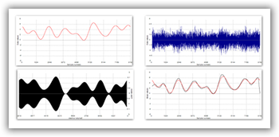

Scadlab software
ScadLab is software applied for research and project signal processing procedures in intensive noises in different information control systems, technological processes, means of communications, navigation, radar and other measurement systems
